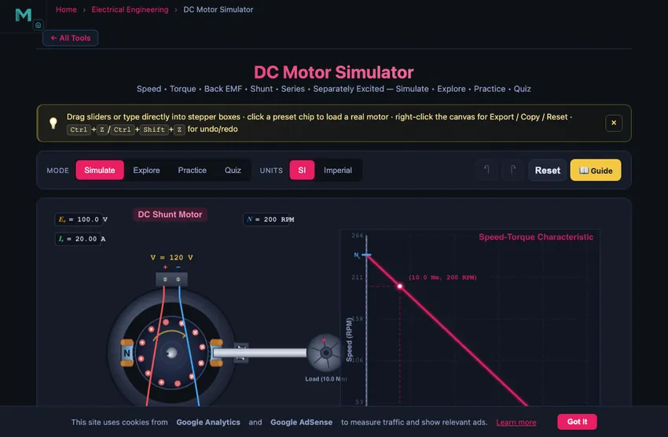
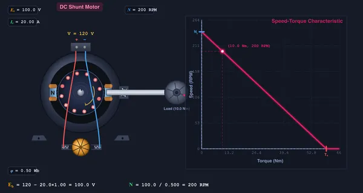

DC Motor Simulator
3D Model — DC Motor Simulator
Interactive DC motor simulator with live speed-torque curve, back EMF, armature current, presets, unit toggle, and step-by-step calculations. Free.
Speed • Torque • Back EMF • Shunt • Series • Separately Excited — Simulate • Explore • Practice • Quiz
Display Controls
Σ Live equations — values substituted from current state
⚡ Power flow — input → output, with copper loss
💡 What-if coach — insights from current values
1 Overview
The DC Motor Simulator lets you explore the operating characteristics of direct-current motors — back EMF, speed-torque curves, armature current, copper losses and efficiency. Three motor configurations are modelled: shunt (field in parallel with armature), series (field in series), and separately excited (independent field supply). Each reacts differently to changes in supply voltage, field flux, armature resistance, and mechanical load.
This tool is built for electrical-engineering students, instructors, and industrial technicians who want a fast hands-on intuition for motor characteristics without physical lab equipment.
2 Building the Circuit
The simulator opens in Simulate mode with a shunt motor at V = 120 V, Ra = 1.0 Ω, φ = 0.50 Wb, and load torque = 10 Nm. To begin:
- Pick a Motor Type: Shunt, Series, or Separately Excited.
- Click a preset chip (12 V Hobby, 220 V Lathe, EV Traction, Crane Hoist, etc.) to load a realistic configuration in one click.
- Drag the sliders or type into the stepper boxes for precise values. The text input is unit-aware — in Imperial mode you can enter values in lbf·ft and they convert back to SI internally.
- Watch the readout cards, the operating-point marker on the speed-torque curve, and the rotating rotor animation update in real time.
3 Energising the Circuit
Simulate is the main interactive workspace. The canvas combines a motor schematic (left) and a speed-torque characteristic (right). Use the canvas feature toggles to focus the view:
- Show Schematic — toggles the motor diagram on/off.
- Show Speed-Torque Curve — toggles the right-hand graph.
- Show Equation — on-canvas classical equation Eb = V − IaRa with values that update live.
- Show Grid — background grid for sketch precision.
Right-click the canvas for Copy operating point, Export PNG, Export sweep CSV, Toggle grid, and Reset all.
4 Motor Types — What Changes
- Shunt: field in parallel with armature; flux nearly constant. Speed-torque curve is almost flat. Best for constant-speed loads like lathes, blowers, and conveyors.
- Series: field in series with armature; flux rises with load current. Torque is proportional to Ia2, giving huge starting torque. Speed drops steeply with load — never run a series motor at no load (runaway).
- Separately Excited: the field supply (Vfield) is independent of the armature supply. A second slider appears so you can change V or φ separately. Ideal for precise speed control (Ward-Leonard, modern thyristor drives).
5 Learning Panels, Calculations & Math
Below the readouts you'll find three collapsible Learning panels:
- Live equations — classical LaTeX rendering (Eb, N, T, η) with current values substituted in.
- Power flow — Pin = Pcu + Pout with the copper-loss term explicit.
- What-if coach — plain-English diagnostic notes that change as you tweak the inputs (over-fluxed, near stall, runaway risk, etc.).
Click Show Calculations (the calculator FAB at the bottom-right of the canvas) for a step-by-step derivation of the current operating point in classical mathematical notation.
6 Explore, Practice & Quiz
Explore mode has four categories — Basics, Motor Types, Speed Control, Losses & Efficiency — each with diagrams and worked examples.
Practice mode generates 12 problem types: back EMF, armature current, torque, speed from Eb, output power, efficiency, shunt-field current, starting current, no-load speed, stall torque, speed regulation, copper loss.
Quiz mode serves 8 randomised questions (MCQ + numeric) covering every key concept, with detailed answer review afterwards.
7 Units, Export & Keyboard Shortcuts
- SI / Imperial toggle (top toolbar): torque switches between Nm and lbf·ft, power between W and hp. Voltage, current, and resistance remain universal. All internal math stays in SI; only display values convert.
- Export CSV — downloads a 50-point speed-torque sweep at the current settings, ready for Excel/Python plotting.
- Export PNG — saves the full canvas (DPR-aware) as a watermarked study sheet.
- Keyboard: Ctrl+Z undo, Ctrl+Shift+Z redo, R reset, U toggle units.
8 Tips & Best Practices
- Start with the shunt motor and a small load. Notice that Eb ≈ V — the armature drop is tiny when Ia is small.
- Switch to Series and slowly drop load torque toward zero. Speed climbs rapidly — this is the runaway danger described in the warnings.
- Try field weakening: in shunt mode, lower φ below 0.3 Wb and watch speed rise above base value.
- Compare the operating point for the same load on shunt vs. series — the same 30 Nm gives very different speeds.
- Use the What-if coach panel to learn the operating regimes (light load, moderate load, near stall) without memorising the curve.
Understanding DC Motors — Free Interactive Simulator

A DC motor converts direct-current electrical energy into mechanical rotational energy. The Lorentz force on a current-carrying conductor in a magnetic field creates a torque on the rotor. This simulator lets you explore back EMF, armature current, speed-torque characteristics, copper losses, and efficiency across three common configurations — shunt, series, and separately excited — with live unit conversion, step-by-step calculation, presets for real-world motors, and CSV/PNG export.
How is back EMF calculated in a DC motor?
Back EMF is the voltage generated by the rotating armature that opposes the supply voltage: Eb = V − Ia·Ra. Motor speed is directly proportional to back EMF and inversely proportional to field flux: N = Eb / (K·φ). At standstill Eb = 0, so starting current Istart = V / Ra is very large — that is why large motors require a starter resistor or soft-start drive.
Shunt vs. Series vs. Separately Excited — quick comparison
| Parameter | Shunt | Series | Separately Excited |
|---|---|---|---|
| Field connection | Parallel with armature | Series with armature | Independent supply |
| Flux φ | Nearly constant | Increases with Ia | Set by Vfield |
| Speed-torque curve | Almost flat | Hyperbolic, steep | Linear (adjustable) |
| Starting torque | Moderate | Very high (T ∝ Ia2) | Adjustable |
| No-load behaviour | Stable, near rated speed | Runaway (do not run) | Stable |
| Typical application | Lathes, blowers, conveyors | Cranes, hoists, traction | Ward-Leonard, modern drives |
What is the speed-torque characteristic of a DC motor?
The speed-torque curve is the most important performance characteristic. For shunt and separately-excited motors it is linear: N = N0 − (N0 / Tstall)·T. For series motors it is hyperbolic, with very high speed at light load. The operating point is where this curve intersects the load torque line. Our simulator marks the operating point with a coloured dot and projects dashed lines to both axes so the values are easy to read.
How do you control the speed of a DC motor?
Three speed-control methods are demonstrated in Explore mode:
- Armature voltage control — vary V to scale speed below the base value. Most efficient method, common in modern thyristor drives.
- Field weakening — reduce φ to push speed above the base value. Used for constant-power operation above rated speed.
- Armature resistance control — add series resistance. Simple but lossy — the inserted resistance dissipates power continuously.
Why does a DC series motor have such high starting torque?
In a series motor the same current flows through both the field and the armature. Flux φ is approximately proportional to Ia (below saturation), so torque T = KφIa becomes T = K·k·Ia2. At startup Eb = 0 and Ia is very large, so torque is enormous — ideal for cranes, hoists, electric traction (locomotives), and starter motors.
A 5 kW Motor at Rated Load — The Numbers Behind the Curve
Take a typical industrial shunt-wound DC motor: 230 V, 5 kW rated mechanical output, 1500 rpm rated speed, armature resistance Ra = 0.3 Ω, field resistance Rf = 115 Ω, mechanical losses 250 W. Load the simulator’s matching preset and walk through:

| Quantity | Working | Result |
|---|---|---|
| Rated torque | T = 60P/(2πN) = 60×5000/(2π×1500) | 31.8 N·m |
| Field current | If = V/Rf = 230/115 | 2.0 A |
| Mechanical + iron losses | given | 250 W |
| Armature input power (estimate) | Parm = Pmech + losses | ~5250 W |
| Armature current (back-EMF method) | Ia ≈ 24 A (from iterative solution) | 24 A |
| Copper losses in armature | Ia²Ra = 24²×0.3 | 173 W |
| Copper losses in field | If²Rf = 4×115 | 460 W |
| Overall efficiency | η = 5000/(5000+250+173+460) | 85 % |
| Back EMF | Eb = V − IaRa = 230 − 24×0.3 | 222.8 V |
Eighty-five percent efficiency for a 5 kW DC motor is roughly correct; large industrial shunt motors at 100 kW reach 92−94 %. The losses scale unfavourably toward smaller motors because the field power stays roughly constant while the output drops.
Why Series Motors Run Away on No Load
The series-motor speed equation is N ∝ Eb/φ. Since φ ∝ Ia for a series motor, and at no load Ia drops nearly to zero, the flux collapses and the speed shoots up — theoretically to infinity, practically to the point where centrifugal force tears the armature apart. This is not a hypothetical risk. Industrial folklore is full of stories of series motors being decoupled by accident and exploding seconds later.
This is exactly why electric trains, hoists, and cranes use series motors only when permanently connected to a load (the wheels, the hook, the rope drum). Modern variable-speed drives sidestep this by using induction or permanent-magnet motors with electronic field control, where the field cannot collapse.
Brushed vs Brushless — What Changed in the Last Twenty Years
Traditional DC motors use mechanical brushes and a commutator to switch armature current direction as the rotor turns. This works but brings two problems: brushes wear (typical life 2000−5000 hours of continuous duty), and commutation produces electrical noise plus mechanical vibration. Brushless DC motors (BLDC) move the windings to the stator and use permanent magnets on the rotor, with solid-state switching (the inverter) replacing the commutator. Result: longer life (limited only by the bearings), higher efficiency (94−98 % at the design point), and quieter operation.
The cost is the inverter. A brushed motor needs a DC supply and a brush set. A BLDC needs a microcontroller, three half-bridge MOSFET switches, and a rotor-position sensor. Twenty years ago the inverter cost more than the motor. Today, with off-the-shelf BLDC controllers at a few dollars, brushed motors are mostly relegated to low-cost toys, cheap power tools, and educational demonstrations.
References for DC Motor Analysis
- Chapman, S. J. — Electric Machinery Fundamentals, 5th ed., Chapter 8 (DC Motors and Generators).
- Sen, P. C. — Principles of Electric Machines and Power Electronics, 3rd ed.
- IEEE Std 113-1985 — Test Procedures for Direct-Current Machines.
- NEMA MG 1 — Motors and Generators. The North American standard for motor ratings.
Explore Related Simulators
If you found this DC Motor simulator helpful, explore our AC Generator simulator, Faraday's Law simulator, Transformer simulator, Kirchhoff Solver, RLC Circuit simulator, and the House Wiring Simulator for more hands-on electrical engineering practice.